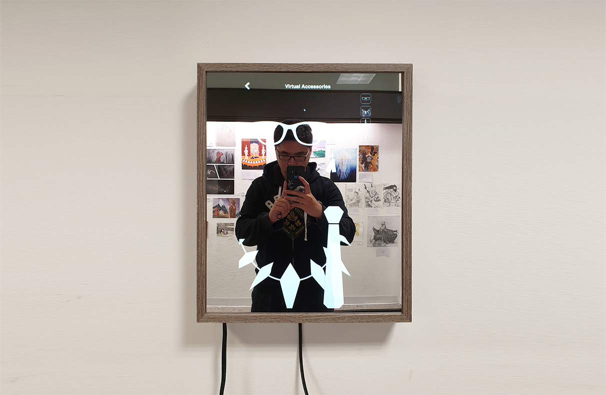

Conclusion
This project was the largest scale project that I've worked on. Since I created the mirror from scratch, I had to build a lot of components and conducted extensive research to understand the problem and its users. That being said, I enjoyed the journey of this project and I learned a lot about developing an end-to-end product. In the future, I would like to collaborate with someone who knows how to work with AR and apply it to the virtual dress room, so users can try out clothings from online stores through reflective AR.

Initial design of Zima Mirror displayed at the Undergrad Open Studio 2019.